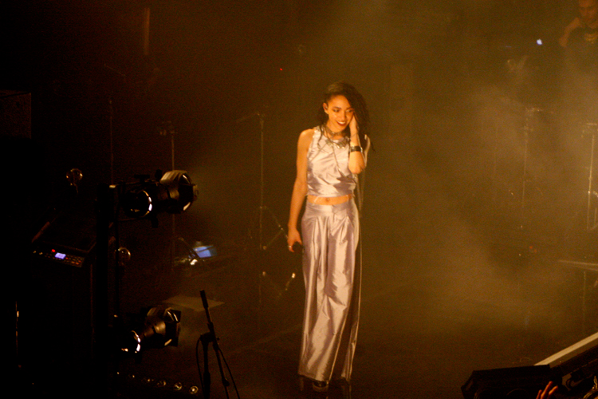

FKA Twigs: Metro Chicago
There is something captivating about the UK songstress FKA Twigs. Perhaps it is the quiet seductive charm that she exudes, the way she makes love to the mic with her breathy vocals, her artistic take on the modern sounds of R&B, or all of the above. With all that being said and true, she had the crowd at Metro Chicago completely under her spell, mesmerized. We all had a weak spot for Twigs after the sold out show was over. So this is what falling in love looked like, silent stares, and awestruck.
The concert was a part of her first North American tour, her stardom steadily rising stateside, and coming fresh off of her National television debut on Jimmy Fallon’s Tonight Show. There was an energy brewing before she even walked out on stage, and when she emerged from the shadows the room lit on fire with a passion fitting for such a tantalizing performer. She performed songs from her debut album LP1, which has been highly regarded and recognized as one of the strongest debuts, even so much as to beat out bigger names for the UK’s prestigious Mercury Award.
The sounds of the synthesizers, the bass, the lighting, with hues of purple, deep reds, and beams of light illuminating her, set the mood as she crooned out her some of her first songs of the set that night with Ache and Water Me, whose alienesque video and lyrics made her famous. “He told me I was so small / I told him "Water me" / I promise I can grow tall / When making love is free” Whoever that guy was, I bet he’s kicking himself now. Twigs is growing oh so tall - grand even.
This was Twigs’ third show in Chicago, her first a dark and intimate set at Bottom Lounge for a Pitchfork after party, and again to an energetic crowd at Pitchfork. She has definitely come a long way. From learning to vogue, to a certain confidence and owning of the stage, her dance background exudes in every move that she makes, sway of her hips and egyptian like movement of her arms. She performed new songs like “Numbers” and her most recent release “Video Girl.” The song that took the cake however was her widely popular “Two Weeks.” The crowd went absolutely wild, high on the music. If this is just the beginning, fans ought to look forward to what’s next from her. Twigs is surely something that will be talked about for two weeks and beyond.
 (Twigs at her sold out Metro Chicago show)
"Two Weeks"
For more from FKA Twigs:
FKA Twigs' Website
FKA Twigs on Facebook
photo credits: ciera mckissick